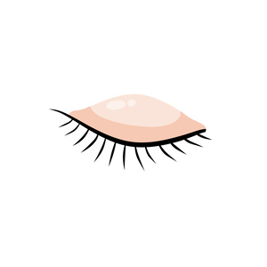

ⲛⲟϩ B nn as pl, eyelid: Pro 6 25 (Lacr, LectP 70, Ryl 424, bible ⲃⲟⲩϩⲓ = SA βλέφαρον. Cf ? ⲉⲛϩ.

ⲛⲟϩ B nn as pl, eyelid: Pro 6 25 (Lacr, LectP 70, Ryl 424, bible ⲃⲟⲩϩⲓ = SA βλέφαρον. Cf ? ⲉⲛϩ.
| view | plural: ⲕⲉⲗϥⲓ B | (noun) eyelid2848 |
| view | ⲥⲱⲡ, ⲥⲱⲡⲉ S | (noun masculine) eyelid1455 |
| view | ⲃⲟⲩϩⲉ S ⲃⲱϩⲉ SA ⲃⲟⲩϩⲓ B | (noun masculine) eyelid [βλεφαρον]619 |
| view | ⲥⲙⲁⲩ SSfBF ⲥⲙⲁⲁⲩ S | (noun masculine) nn m dual
temples (tempora), eyelids [κροταφος, βλεφαρον]1431 |
| view | plural: ⲥⲣⲉⲃⲣⲟⲩⲃⲉ S | (noun) handfuls
But prob l جفن eyelid1463 |
| view | ⲉⲛϩ, ⲛϩ SA | (noun) eyebrow [οφρυες]668 |
| view | ⲛⲟⲩϩ SALF ⲛⲁⲩϩ Sa ⲛⲱϩ S ⲛⲟϩ B ⲁⲛⲟⲩϩ, ⲁⲛⲛⲟⲩϩ F | (noun masculine) rope, cord [σχοινιον]
ship's cables acrobbat's tight rope1220 |
| view | ⲛⲟⲩϩⲉ, ⲛⲱϩⲉ S ⲛⲟⲩϩ SABF ⲛⲟⲩⲟⲩϩ A ⲛⲟϩ B ⲛⲟⲩ SF ⲛⲉϩ- SBF ⲛⲁϩ⸗ SB ⲛⲁⲩϩ⸗ SaA ⲛⲉϩ⸗ B ⲛⲁϩⲟⲩ⸗ NH ⲛⲏϩ†, ⲛⲉϩ† SB | (verb) tr: shake, cast off, set apart, separate [αποτινασσειν, εκκοπτειν]
refl ― separate self ― turn, return A intr: be shaken out179 |